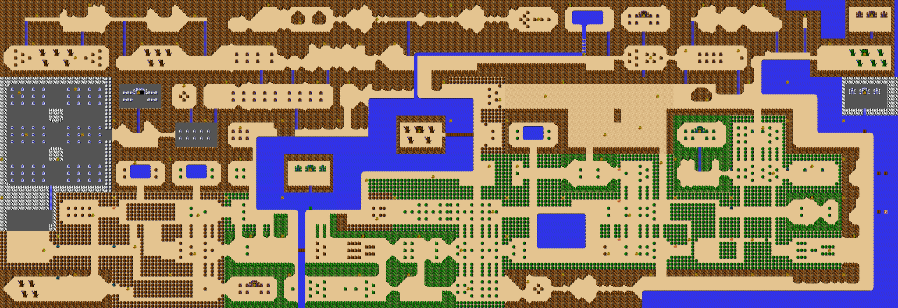

Items
Click to advance, right-click (or long-press) to go back.
Triforce and Old Men An old man lights up when you draw him (O) in that level
Shrines
Old Men Cards
Upgrades seen bought
Overworld Click an entrance to mark what's behind it; right-click (or long-press) to X it out. Dashed circles are unmarked.

Dungeons
Rooms: click for a room, again for cleared; right-click for its kind (moats, old man, item stairs, 1-8, ✕ removes it) or what the brush draws; the Remove brush clears one too. Doors: click for green, right-click for a wall (a thin red line; the same click again clears), mouse wheel for green, gold, dark blue, red, purple. Rooms: wheel down for an item, up for an enemy. On a touch screen, a long press does what the wheel does. The row above the nickname picks that level's set (its nicknames, item column and outline); Custom (Chaos or Mixed) offers every dungeon of every set; the nickname list keeps only the dungeons whose outline holds every room you have marked.